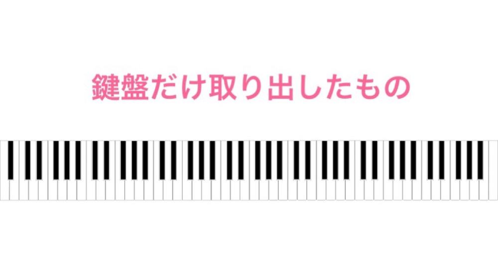
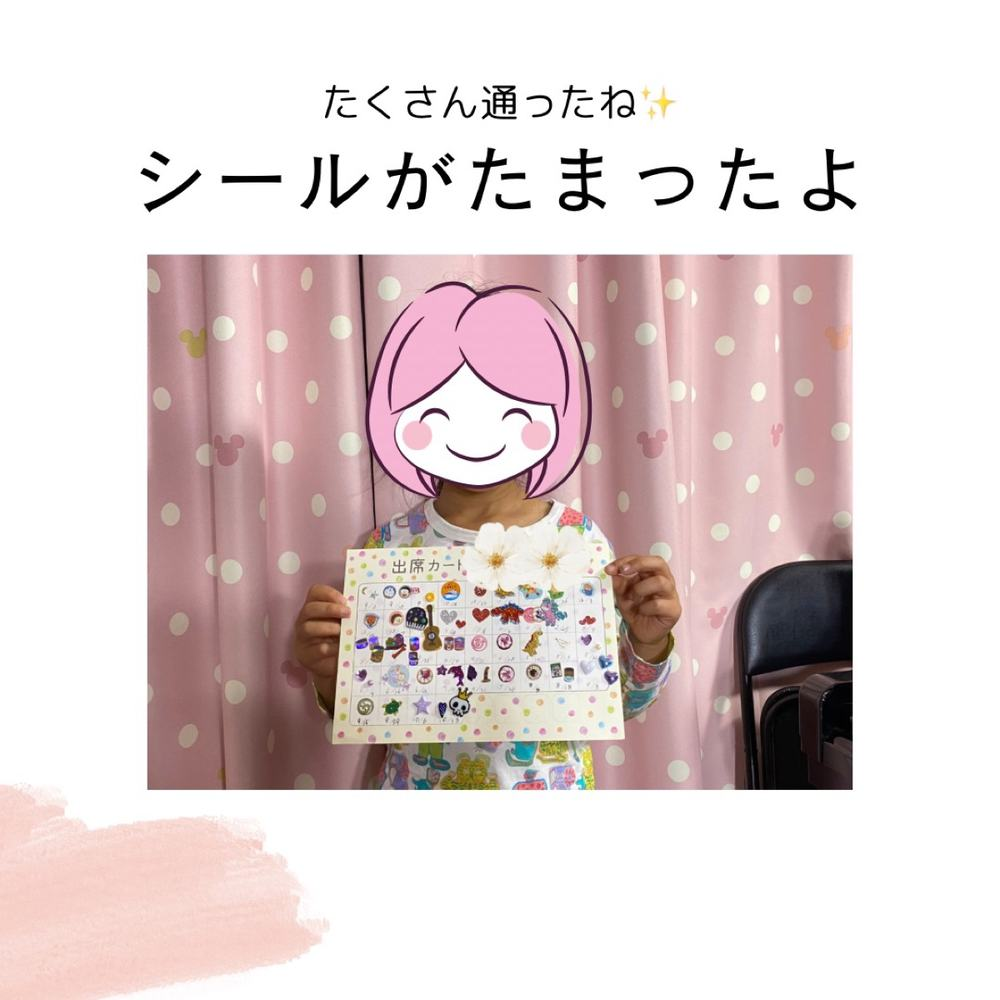
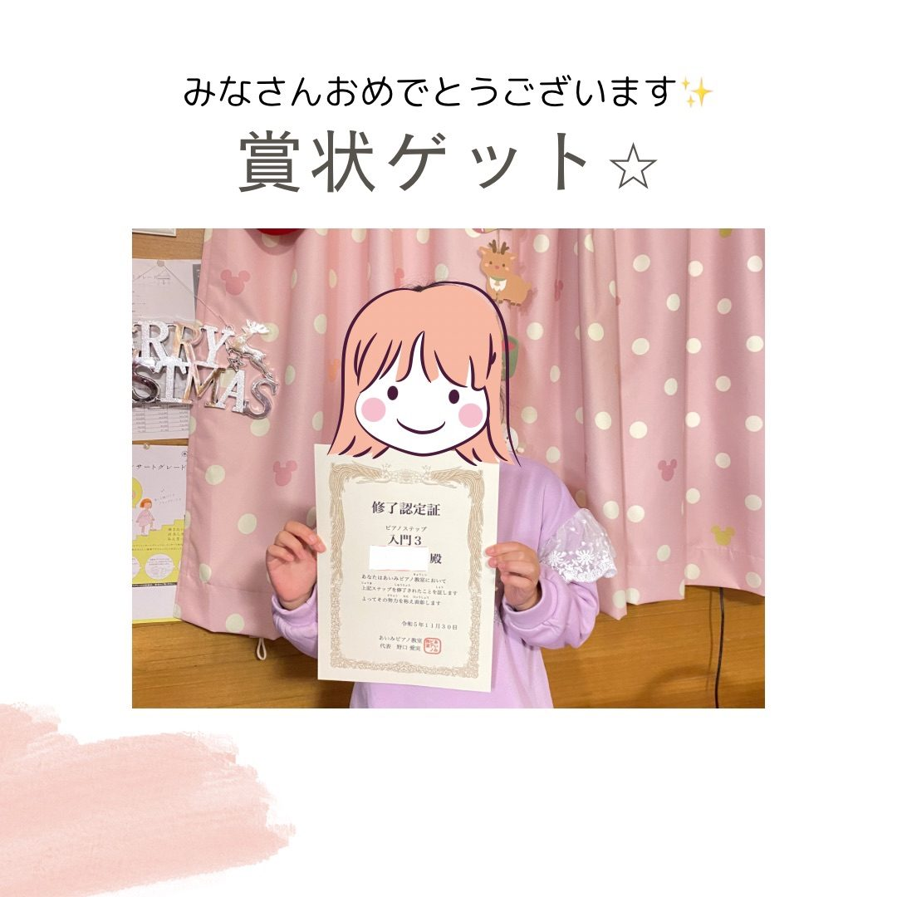
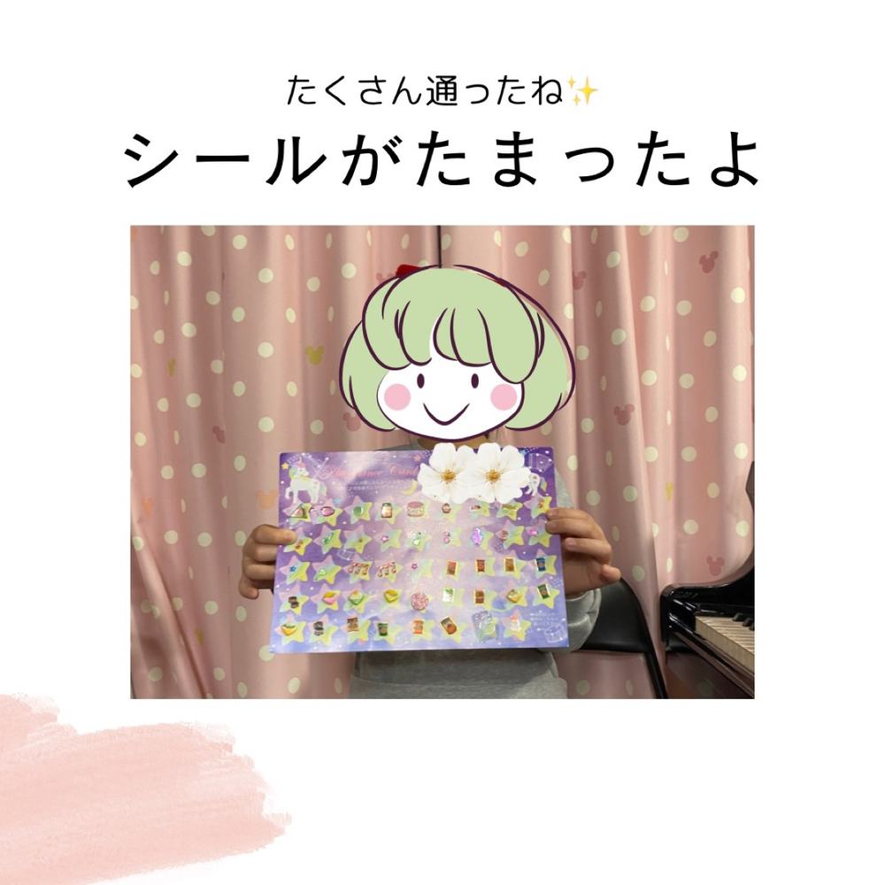

「できる！」が増える、
自信につながる。
すべてのレッスンは、生徒さんそれぞれのレベルや目的に合わせて行います。楽譜が読めない、ピアノが弾けない方も大丈夫。1から丁寧にお教えします。
じっと椅子に座っているのが難しいお子さまも、ご安心ください。一人ひとりに合わせて、リトミックを取り入れたピアノ指導を行っていきます。
ピアノを通して「音楽の楽しさ」を感じてもらえるレッスンを心がけています。

ピアノを演奏するために必要な4つのこと
当教室では、この4つがそろうことで演奏が楽しくなると考えています。
①音楽・ピアノが好きな気持ち
いちばん大切にしているのは、音楽そのものを楽しむ気持ちです。年齢や性格に合わせて、「できた！」→「もっとやってみたい！」→「楽しい」の流れを毎回のレッスンで作ります。
YOASOBIやAdoなど、いま好きな曲をワンフレーズ弾けるだけでも楽しいもの。好きな曲があれば、ぜひ教えてください。
②ソルフェージュ能力を、リトミックで育てる
ソルフェージュ（楽譜を読む・リズムをとる・音を聴き分ける力）は、ピアノの技術的なレッスンだけでは鍛えられません。一般的には座学で学びますが、当教室ではそれに加えてレッスンの中にリトミックを取り入れ、音を「聴く」ことを中心に、音楽を楽しみながら力を伸ばします。
この力がつくと、自分で譜読みができるようになり、音楽を頭で理解できるようになります。そうなると、音楽はどんどん楽しくなりますよ。
③演奏技術
生徒さんのレベルや目的に合わせて、教本や進み方をその都度調整します。楽譜が読めない方、ピアノが初めての方も、1から丁寧にお教えします。
目標がほしい方は、グレード試験やコンクールにも挑戦できます（任意）。練習の仕方までしっかり身につけたい方には、60分コースがおすすめです。
④練習できること
毎日の練習は上達に必要ですが、休む時間も必要です。1か0かではなく、続けることを大切にしています。
月18日以上の練習で合格シール、ステップ修了で賞状と、がんばりが目に見える仕組みがあります。送迎が難しい日も、オンラインレッスンや動画添削で練習を途切れさせません。



ピアノが弾けるようになると
一生もののスキルが身につきます。
- 学校で
活躍できる - 脳トレになる
- 目標に向けて
努力できる - 人前で
自分を表現できる
性格に合わせて、
進み方を変える。
生徒さんにはそれぞれの性格があります。その時々の様子に合わせて、教本や進度を都度変更しています。
- 高い壁へ挑戦することで燃えるタイプ
- ほめられて伸びるタイプ
- 周りを意識することで伸びるタイプ
- 少しずつ目標をクリアしていくタイプ
- マイペースに取り組むタイプ

日々の努力を「見える化」
結果だけでなく、その過程も大事にします。がんばりが目に見えると、続ける力になります。
合格シール
月の練習日数が18日以上で合格シールをお渡しします。台紙がいっぱいになるのが、みんなの楽しみです。
ステップアップ賞状
教室独自のステップアップ表にもとづいて、ステップを1つ修了するごとに賞状をお渡しします。
グレード・コンクール
目標がほしい方は、グレード試験やコンクールにも挑戦できます（任意です）。



まずは体験レッスンへ
楽譜が読めなくても、ピアノに触ったことがなくても大丈夫です。教室の雰囲気や先生との相性を、30分の体験レッスンで確かめてください。
体験レッスン 30分 1,000円
体験レッスンを申し込む